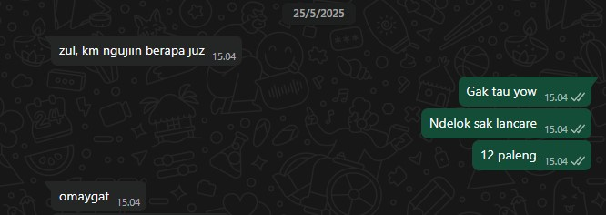
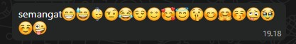

Pendahoeloean
Halo ret, selamat datang di website yang sederhana ini 🤗, sebelumnya kalo bisa baca web ini pas ga lagi rame dan jugak kalo bisa sekali baca selesai ya. Semoga kamu betah baca sampe akhir yak (jangan ilfeel pliszz), hehe. Boleh sambil dengerin musik kok kalo mau, pencet aja lagu yang kamu mau di samping.
Sadar ga si coy, kita udah chatan hampir 2 bulan udah lamanya, aku kayak ngerasa ada sesuatu yang pingin kuungkapin gitu lo. Akhirnya aku buat website ini, yaa sekalian ngasah skill ku juga seh, hihi 😁
Gambar di atas itu gambar pas kita awal awal chat le, inget banget pas itu aku bahasanya masih agak kasar 😅 Ga nyangka se, bisa sampe sekarang ngechatnya, apa mungkin karna sefrekuensi yaa hehe.
Yaudah gini aja pendahoeloeannya, maap kalo agak alay sama aneh websitenya hehe, lanjutin aja bacanya.
cEritA-ceRiTa
Nah ini bagian 2 website nya ret, jadi ini tu aku mau cerita coy.
Mungkin kamu udah tau ceritanya sih ya, tapi pengen kuceritain sama kuperjelas lagi gitu rasanya hehe 😁
Nah ceritanya itu dimulai pas aku mau masuk ke mall. Nah itu aku kayak mikir perempuan dikelas yang cantik tapi pintar trus yang jarang dibahas sama gak gimana gimana gitu,
pokoknya yang paket komplit deh sebutannya. Pertamanya aku mikir kok kayaknya ga ada ya, tapi gatau tiba tiba muncul aja namamu dikepalaku. Trus kupikir pikir
kok bener juga ya, kamu udah cantik, pinter, baik, lucu paket komplit dah pokoknya MasyaAllah 😁
Akhirnya ga mikir itu lagi kan, trus lanjut main deh di tempat namanya milkyverse (rekomendasi se bagus soale).
Nah pas udah selesai main di mall itu kan mau balik ke parkiran ya, nah tepak pas mau keluar itu tiba tiba ada notifmu. Kaget dong aku kayak "lho tumben banget di chat aretha."
Udah deh darisitu kita mulai chatan. Awalnya bahas tahfidz sampe semua hal dibahas wkwk.
Memories
Wedeh masih bertahan nih sampe bagian 3 website ini mantap dah. Kali ini isinya kayak kenangan sama momen momen pas kita chatan gitu deh.
nYEmagAtiN 🔥


Ini momen kamu nyemangatin aku. Makasih buanyak lo udah nyemangatin, btw yang terakhir paling ampuh wkwk.
sAltInG 😚

Ini momen kamu salting ga se ret wkwk, lucu semua le reaksimu. Tapi kayaknya ini ga smw dehh, aku ngambil yang banyak emoji nya aja hehehe (maaf kalok ss nya jelek) 😁
mAkanan 🤤
Table dibawah dah bener ta itu makanan favmu semua? hehe
| No | Makanan |
|---|---|
| 1 | Siomay 🥚 |
| 2 | Bakso 🧆 |
| 3 | Matcha 🍵🍃 |
| 4 | Sate 🖠|
| 5 | Semuanya 😂 |
tOp woRD 🆎
Menurutku ini emoji, stiker, sama kata yang sering kamu pakek
| Jenis | Word |
|---|---|
| Emoji | 😁,😂,😅 |
| Stiker | |
| Kata | Hehe, coy, iyap (kalo iya biasa ga diitung ya) |
Others
Nah kalok ini isinya hal sama momen lain yang kuinget tentangmu pokoknya
Nah sampe segini aja coy bagian ke 3 nya nanti kalo kebanyakan males kamu bacanya wkwk.
Mantap
Selamat kamu dah sampe bagian terakhir halaman ini, makasih yaa masih mau scroll sampe sini. Dibawah ini ada tombol untuk ke halaman selanjutnya coy, monggo dipencet 😁